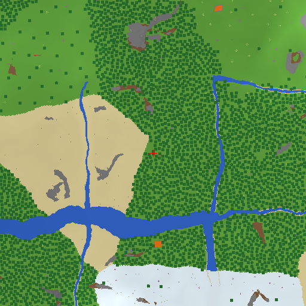

確かめたこと: サバイバルのロビー 20203 に入って観察したところ、その地形のシードは、ロビー名と同じ「20203」でした(2026-11-06、1 回の観察)。確かめていないこと: 実際のゲーム画面の地形との一致。サーバーが地形を直す場合は、地図と違う所が出ます。別のゲームモード(スカイブロックなど)は、シードの決まり方が違う可能性があります。
地図(ビルド v98qt8 の地形生成プログラム)

色: 草=緑、葉=濃い緑、土=茶、砂=黄、石=灰、水=青、溶岩=橙。明るさは地面の高さ(低い=暗い、高い=明るい)。木の上は、葉の色になります。
地面の高さと内訳
地面の高さ(Y): -52 〜 77。一番上のブロックの内訳:
| 種類 | 割合 |
|---|---|
| 草 | 40.6% |
| 葉(木) | 27.2% |
| 砂 | 15.2% |
| 雪・氷 | 7.7% |
| 水 | 6.1% |
| 石 | 2.0% |
| 土 | 0.8% |
| そのほか | 0.2% |
| 溶岩 | 0.1% |
| サボテン | 0.0% |
地形の変化の見張り
この地図の「指紋」(ハッシュ): b0e99a9dac81601a。ビルドが変わるたびに作り直して、指紋が変わったら「地形の作り方が変わった」と記録します。いまのところ、変わった記録はありません。
作り方: scripts/seedmap.js(公式のファイルは保存せず、毎回、公開されている配信元から読んで計算します)。計算時間 9 秒。更新: 11/8 01:00(日本時間)。